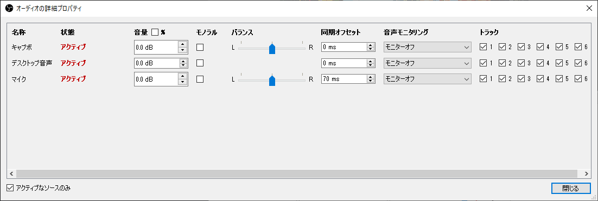

OBS Studioの設定
私がOBS Studioで使用している設定を以下に示す。（OBS Studioの設定についてはこちらのページが異常に詳しいのでより深く知りたい方はこちらを見るとよい）
シーン

【ゲーム画面】キャプボ(映像キャプチャデバイス)が追加されているだけのシーン。
【暗転】ソースなしのシーン。画面を暗転させることができる。
映像キャプチャデバイスのプロパティ

こんな感じ。設定項目は使用しているキャプボによって異なると思われる。
オーディオの詳細プロパティ
マイクの同期オフセットに「70ミリ秒」を指定している。マイク音声をゲーム音声に比べて70ミリ秒遅らせる、という設定。私の環境ではゲームの映像・音声の受信に70ミリ秒ほどの遅延があるようなので、それに合わせるために設定してある。
（人のゲーム配信を見ていて「なんかキャラが被弾する直前からもう配信者の悲鳴が聞こえるな…」と感じたことがないだろうか？ その原因はたぶんキャプボが遅延しているせいである）
マイクのフィルタ


【ノイズ抑制】「サー…」というようなノイズを消して声をクリアにするフィルタ。OBS Studioのバージョン26から方式に「RNNoise」が追加された。従来のフィルタ（Speex）に比べて圧倒的に綺麗になるが、声の部分まで除去されてしまうことも多いので現状使っていない。
【ノイズゲート】PCのファンの音を始めとする生活音や環境音など「声よりも小さい音量で鳴り続けている雑音」を無視するためのフィルタ。「開放閾値」で設定した音量よりも小さい音しかマイクに入っていない間、OBSはマイクを無視するようになる。（Discordにも同じ機能がある）
【リミッター】マイク音量が指定した音量を超えないようにするフィルタ。これを設定しておけば思わず大声を出しても安心。
【ゲイン】音量を増幅するフィルタ。（もちろん声とともにノイズも増幅される）
音声フィルタは順番にも意味がある（上から順にフィルタがかかる）ので注意。
デスクトップ音声のフィルタ


「リミッター」「ゲイン」だけ付けてある。
設定>出力

出力モードを「基本」から「詳細」に変更。エンコーダとしてハードウェアエンコーダ（「x264」以外のもの。私の環境では「QuickSync」）を指定してやると動作がかなり軽くなる。ビットレ―トは10000 Kbps。（1920x1080 30FPSなら6000 Kbps、1280x720 60FPSなら6000 Kbps、1280x720 30FPSなら4000 Kbps程度でよい）
参考: 【配信者さん向け】超簡単！低負荷で高画質な配信をしよう！配信設定教えます！


リプレイバッファはSwitchの30秒録画のように「過去の映像」を保存する機能。450秒（7分30秒）を指定してリプレイバッファを開始しておけば、バイトが終わってから「リプレイバッファを保存」すればそのバイトの映像を保存することができる。
その他の設定


プロファイルとシーンコレクション


いろんな設定で配信をすることがある場合、プロファイルとシーンコレクションの機能を活用するとよい。プロファイルは「設定」を保存しておいて必要に応じて切り替えられる機能で、シーンコレクションは「シーン」を保存しておいて必要に応じて切り替えられる機能。
統計

上部メニューから表示＞統計を選択すると、統計情報を見ることができる。配信の品質に問題がある場合にどこに原因があるかをある程度特定することができる。